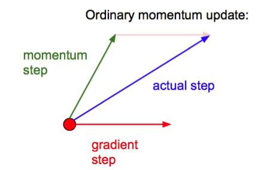

Prepare
1.Mini-batch SGD
Sample->Forward->Backpro->Update
2. Batch Normalization
\(\hat{x^{(k)}} = \frac{x^{k}-E[x^{(k)}]}{\sqrt{Var[x^{(k)}]}}\)
好处:
1. 提升梯度流动效果
2. 允许更高的learning rates
3. 减少对初始化参数的依赖
4. 作为一种regulation,轻微减少dropout的需要
Parameter Updates
1. sgd
x += - learning_rate * dx
缺点：当梯度水平方向平缓竖直方向较陡时，梯度在水平方向下降缓慢，在竖直方向却严重震荡，导致收敛较慢。
2. Momentum update
v = mu * v - learning_rate * dx
x += v
mu通常为0.5，0.9，0.99（有时从0.5->0.9）
优点：让梯度在较陡的地方下降慢些，在梯度平缓的地方下降快些。
3. Nesterov Momentum update
\(v_t = \mu v_{t-1} - \epsilon \nabla{f(\theta_{t-1}+\mu v_{t-1})}\)
\(\theta_t = \theta_{t-1}+v_t\)

让 \(\varphi_{t-1} = \theta_{t-1}+\mu v_{t-1}\),则
v_prev = v
v = mu * v - learning_rate * dx
x += -mu * v_prev + (1 + mu) * v
优点
4. AdaGrad update
cache += dx**2
x += learning_rate * dx / (np.sqrt(cache)+1e-7)